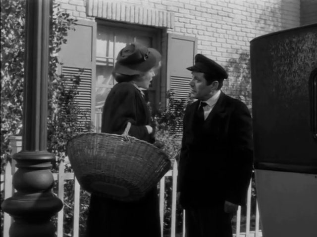
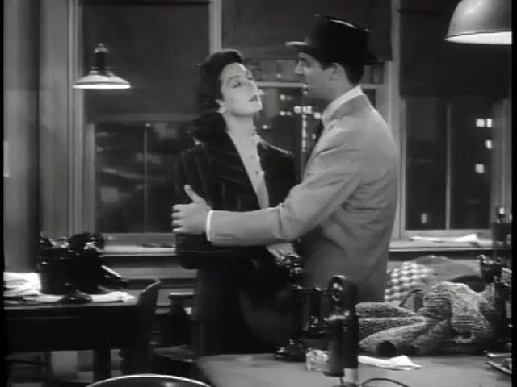
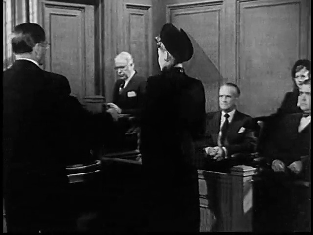
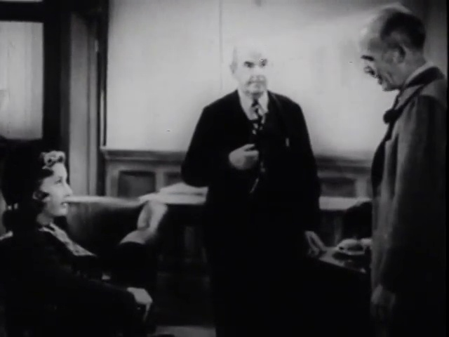
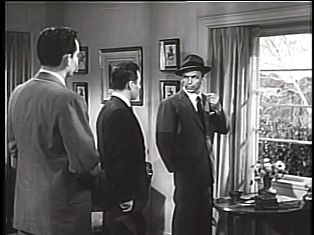

Built from the frozen local compilation sources/classic_movie_compilation.mp4. Each card uses a real hidden reference screenshot from the compilation.

Year: 1941
Reason: Sharp noir interior confrontation with crisp lighting and tense blocking.

Year: 1940
Reason: Fast newsroom dialogue and dense ensemble energy make it a strong screwball recommendation.

Year: 1949
Reason: Tense noir framing and suspicious close-ups give the clip immediate mystery.

Year: 1941
Reason: A dramatic public-speaking scene with strong ensemble reactions and moral tension.

Year: 1954
Reason: Domestic-room suspense and pressured character staging make the scene instantly watchable.